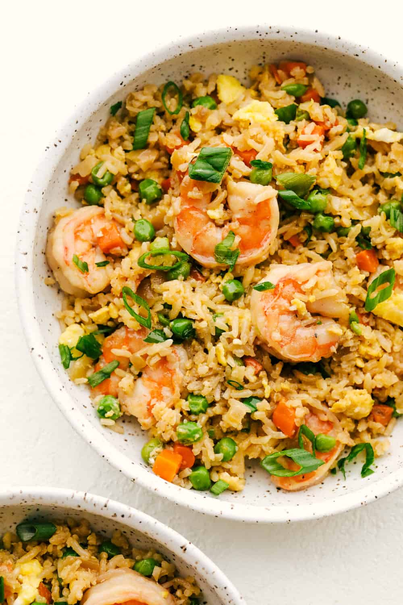

Pasta Alla Vodka

Shrimp fried rice is a classic and go to take out dish. Making it at home can be so much better.
Ingredients
- 4 Cups of Day Old Rice
- 8 ounces small raw shrimp deveined
- 3-4 eggs beaten
- 5 tabelspoon Vegetable Oil
- 2 Green Onions
- 2-3 Cloves Garlic
- 3/4 cup Frozen Peas Carrots
- 1 tablespoon Soy Sauce
- 2 tablespoon Oyster Sauce
- 1 tablespoon unsalted butter
- Salt & Pepper
Steps
- Add oil to pan and cook shrimp. Season with salt and pepper. Transfer to bowl when cooked through.
- Add oil to a pan on medium heat and cook eggs. Just before they are done and still a little runny, transfer to a bowl
- Dice green onion, then seperate the white and green. Mince garlic
- Start cooking garlic and white onion with oil in a pan. Once fragrent, add rice and start breaking it up.
- Stir rice and add frozen vegetables.
- Add back shrimp and eggs.
- Mix soy sauce and oyster sauce together then add it to the pan.
- Stir everything and make sure the sauce is spread.
- Finish by adding butter and some pepper.